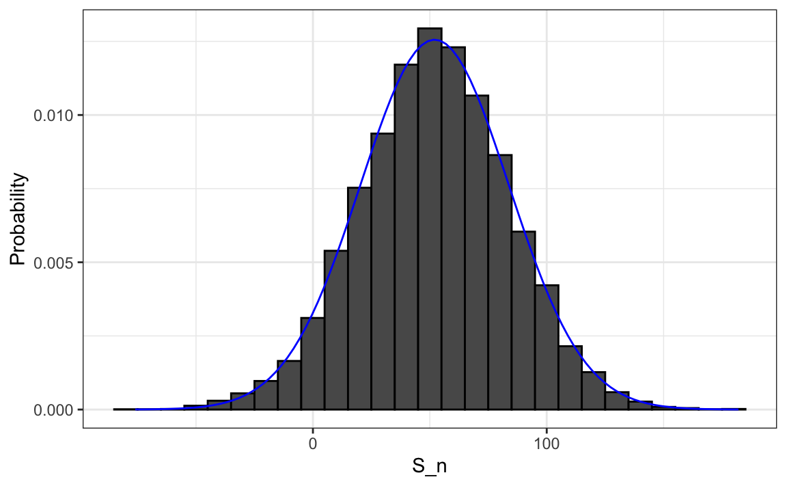

5 Random variables
In data science, we often deal with data that is affected by chance in some way: the data comes from a random sample, the data is affected by measurement error, or the data measures some outcome that is random in nature. Being able to quantify the uncertainty introduced by randomness is one of the most important jobs of a data analyst. Statistical inference offers a framework, as well as several practical tools, for doing this. The first step is to learn how to mathematically describe random variables.
In this chapter, we introduce random variables and their properties starting with their application to games of chance. We then describe some of the events surrounding the financial crisis of 2007-20081 using probability theory. This financial crisis was in part caused by underestimating the risk of certain securities2 sold by financial institutions. Specifically, the risks of mortgage-backed securities (MBS) and collateralized debt obligations (CDO) were grossly underestimated. These assets were sold at prices that assumed most homeowners would make their monthly payments, and the probability of this not occurring was calculated as being low. A combination of factors resulted in many more defaults than were expected, which led to a price crash of these securities. As a consequence, banks lost so much money that they needed government bailouts to avoid closing down completely.
5.1 Random variables
Random variables are numeric outcomes resulting from random processes. We can easily generate random variables using some of the simple examples we have shown. For example, define X to be 1 if a bead is blue and red otherwise:
Here X is a random variable: every time we select a new bead the outcome changes randomly. See below:
Sometimes it’s 1 and sometimes it’s 0.
5.2 Sampling models
Many data generation procedures, those that produce the data we study, can be modeled quite well as draws from an urn. For instance, we can model the process of polling likely voters as drawing 0s (Republicans) and 1s (Democrats) from an urn containing the 0 and 1 code for all likely voters. In epidemiological studies, we often assume that the subjects in our study are a random sample from the population of interest. The data related to a specific outcome can be modeled as a random sample from an urn containing the outcome for the entire population of interest. Similarly, in experimental research, we often assume that the individual organisms we are studying, for example worms, flies, or mice, are a random sample from a larger population. Randomized experiments can also be modeled by draws from an urn given the way individuals are assigned into groups: when getting assigned, you draw your group at random. Sampling models are therefore ubiquitous in data science. Casino games offer a plethora of examples of real-world situations in which sampling models are used to answer specific questions. We will therefore start with such examples.
Suppose a very small casino hires you to consult on whether they should set up roulette wheels. To keep the example simple, we will assume that 1,000 people will play and that the only game you can play on the roulette wheel is to bet on red or black. The casino wants you to predict how much money they will make or lose. They want a range of values and, in particular, they want to know what’s the chance of losing money. If this probability is too high, they will pass on installing roulette wheels.
We are going to define a random variable \(S\) that will represent the casino’s total winnings. Let’s start by constructing the urn. A roulette wheel has 18 red pockets, 18 black pockets and 2 green ones. So playing a color in one game of roulette is equivalent to drawing from this urn:
The 1,000 outcomes from 1,000 people playing are independent draws from this urn. If red comes up, the gambler wins and the casino loses a dollar, so we draw a -$1. Otherwise, the casino wins a dollar and we draw a $1. To construct our random variable \(S\), we can use this code:
Because we know the proportions of 1s and -1s, we can generate the draws with one line of code, without defining color:
We call this a sampling model since we are modeling the random behavior of roulette with the sampling of draws from an urn. The total winnings \(S\) is simply the sum of these 1,000 independent draws:
5.3 The probability distribution of a random variable
If you run the code above, you see that \(S\) changes every time. This is, of course, because \(S\) is a random variable. The probability distribution of a random variable tells us the probability of the observed value falling at any given interval. So, for example, if we want to know the probability that we lose money, we are asking the probability that \(S\) is in the interval \(S<0\).
Note that if we can define a cumulative distribution function \(F(a) = \mbox{Pr}(S\leq a)\), then we will be able to answer any question related to the probability of events defined by our random variable \(S\), including the event \(S<0\). We call this \(F\) the random variable’s distribution function.
We can estimate the distribution function for the random variable \(S\) by using a Monte Carlo simulation to generate many realizations of the random variable. With this code, we run the experiment of having 1,000 people play roulette, over and over, specifically \(B = 10,000\) times:
Now we can ask the following: in our simulations, how often did we get sums less than or equal to a?
mean(S <= a)This will be a very good approximation of \(F(a)\) and we can easily answer the casino’s question: how likely is it that we will lose money? We can see it is quite low:
mean(S < 0)
#> [1] 0.0456We can visualize the distribution of \(S\) by creating a histogram showing the probability \(F(b)-F(a)\) for several intervals \((a,b]\):

We see that the distribution appears to be approximately normal. A qq-plot will confirm that the normal approximation is close to a perfect approximation for this distribution. If, in fact, the distribution is normal, then all we need to define the distribution is the average and the standard deviation. Because we have the original values from which the distribution is created, we can easily compute these with mean(S) and sd(S). The blue curve you see added to the histogram above is a normal density with this average and standard deviation.
This average and this standard deviation have special names. They are referred to as the expected value and standard error of the random variable \(S\). We will say more about these in the next section.
Statistical theory provides a way to derive the distribution of random variables defined as independent random draws from an urn. Specifically, in our example above, we can show that \((S+n)/2\) follows a binomial distribution. We therefore do not need to run for Monte Carlo simulations to know the probability distribution of \(S\). We did this for illustrative purposes.
We can use the function dbinom and pbinom to compute the probabilities exactly. For example, to compute \(\mbox{Pr}(S < 0)\) we note that:
\[\mbox{Pr}(S < 0) = \mbox{Pr}((S+n)/2 < (0+n)/2)\]
and we can use the pbinom to compute \[\mbox{Pr}(S \leq 0)\]
n <- 1000
pbinom(n/2, size = n, prob = 10/19)
#> [1] 0.0511Because this is a discrete probability function, to get \(\mbox{Pr}(S < 0)\) rather than \(\mbox{Pr}(S \leq 0)\), we write:
pbinom(n/2 - 1, size = n, prob = 10/19)
#> [1] 0.0448For the details of the binomial distribution, you can consult any basic probability book or even Wikipedia3.
Here we do not cover these details. Instead, we will discuss an incredibly useful approximation provided by mathematical theory that applies generally to sums and averages of draws from any urn: the Central Limit Theorem (CLT).
5.4 Distributions versus probability distributions
Before we continue, let’s make an important distinction and connection between the distribution of a list of numbers and a probability distribution. In the visualization chapter, we described how any list of numbers \(x_1,\dots,x_n\) has a distribution. The definition is quite straightforward. We define \(F(a)\) as the function that tells us what proportion of the list is less than or equal to \(a\). Because they are useful summaries when the distribution is approximately normal, we define the average and standard deviation. These are defined with a straightforward operation of the vector containing the list of numbers x:
A random variable \(X\) has a distribution function. To define this, we do not need a list of numbers. It is a theoretical concept. In this case, we define the distribution as the \(F(a)\) that answers the question: what is the probability that \(X\) is less than or equal to \(a\)? There is no list of numbers.
However, if \(X\) is defined by drawing from an urn with numbers in it, then there is a list: the list of numbers inside the urn. In this case, the distribution of that list is the probability distribution of \(X\) and the average and standard deviation of that list are the expected value and standard error of the random variable.
Another way to think about it that does not involve an urn is to run a Monte Carlo simulation and generate a very large list of outcomes of \(X\). These outcomes are a list of numbers. The distribution of this list will be a very good approximation of the probability distribution of \(X\). The longer the list, the better the approximation. The average and standard deviation of this list will approximate the expected value and standard error of the random variable.
5.5 Notation for random variables
In statistical textbooks, upper case letters are used to denote random variables and we follow this convention here. Lower case letters are used for observed values. You will see some notation that includes both. For example, you will see events defined as \(X \leq x\). Here \(X\) is a random variable, making it a random event, and \(x\) is an arbitrary value and not random. So, for example, \(X\) might represent the number on a die roll and \(x\) will represent an actual value we see 1, 2, 3, 4, 5, or 6. So in this case, the probability of \(X=x\) is 1/6 regardless of the observed value \(x\). This notation is a bit strange because, when we ask questions about probability, \(X\) is not an observed quantity. Instead, it’s a random quantity that we will see in the future. We can talk about what we expect it to be, what values are probable, but not what it is. But once we have data, we do see a realization of \(X\). So data scientists talk of what could have been after we see what actually happened.
5.6 The expected value and standard error
We have described sampling models for draws. We will now go over the mathematical theory that lets us approximate the probability distributions for the sum of draws. Once we do this, we will be able to help the casino predict how much money they will make. The same approach we use for the sum of draws will be useful for describing the distribution of averages and proportion which we will need to understand how polls work.
The first important concept to learn is the expected value. In statistics books, it is common to use letter \(\mbox{E}\) like this:
\[\mbox{E}[X]\]
to denote the expected value of the random variable \(X\).
A random variable will vary around its expected value in a way that if you take the average of many, many draws, the average of the draws will approximate the expected value, getting closer and closer the more draws you take. This makes the expected value a useful quantity to compute.
For discrete random variable with possible outcomes \(x_1,\dots,x_n\) the expected value is defined as
\[ \mbox{E}[X] = \sum_{i=1}^n x_i \,\mbox{Pr}(X = x_i) \] If \(X\) is a continuous random variable, with range of values \(a\) to \(b\) and probability density function \(f(x)\), this sum turns into an integral:
\[ \mbox{E}[X] = \int_a^b x f(x) \]
Note that in the case that we are picking values from an un urn where each value \(x_i\) has an equal chance \(1/n\) of being selected the above equation is simply the average of the \(x_i\)s
\[ \mbox{E}[X] = \frac{1}{n}\sum_{i=1}^n x_i \]
In the urn used to model betting on red in roulette, we have 20 one dollars and 18 negative one dollars so the expected value is:
\[ \mbox{E}[X] = (20 + -18)/38 \]
which is about 5 cents. You may think it is a bit counter-intuitive to say that \(X\) varies around 0.05, when the only values it takes is 1 and -1. One way to make sense of the expected value in this context is by realizing that if we play the game over and over, the casino wins, on average, 5 cents per game. A Monte Carlo simulation confirms this:
In general, if the urn has two possible outcomes, say \(a\) and \(b\), with proportions \(p\) and \(1-p\) respectively, the average is:
\[\mbox{E}[X] = ap + b(1-p)\]
To see this, notice that if there are \(n\) beads in the urn, then we have \(np\) \(a\)s and \(n(1-p)\) \(b\)s and because the average is the sum, \(n\times a \times p + n\times b \times (1-p)\), divided by the total \(n\), we get that the average is \(ap + b(1-p)\).
Now the reason we define the expected value is because this mathematical definition turns out to be useful for approximating the probability distributions of sum, which then is useful for describing the distribution of averages and proportions. The first useful fact is that the expected value of the sum of the draws is the number of draws \(\times\) the average of the numbers in the urn.
So if 1,000 people play roulette, the casino expects to win, on average, about 1,000 \(\times\) $0.05 = $50. But this is an expected value. How different can one observation be from the expected value? The casino really needs to know this. What is the range of possibilities? If negative numbers are too likely, they will not install roulette wheels. Statistical theory once again answers this question. The standard error (SE) gives us an idea of the size of the variation around the expected value. In statistics books, it’s common to use:
\[\mbox{SE}[X]\]
to denote the standard error of a random variable.
For discrete random variable with possible outcomes \(x_1,\dots,x_n\) the standard error is defined as
\[ \mbox{SE}[X] = \sqrt{\sum_{i=1}^n \left(x_i - E[X]\right)^2 \,\mbox{Pr}(X = x_i)}, \] which you can think of as the expected average distance of \(X\) from the expected value.
If \(X\) is a continuous random variable, with range of values \(a\) to \(b\) and probability density function \(f(x)\), this sum turns into an integral:
\[ \mbox{SE}[X] = \sqrt{\int_a^b \left(x-\mbox{E}[X]\right)^2 f(x)\,\mathrm{d}x} \]
Note that in the case that we are picking values from an un urn where each value \(x_i\) has an equal chance \(1/n\) of being selected the above equation is simply the standard deviation of of the \(x_i\)s
\[ \mbox{SE}[X] = \sqrt{\frac{1}{n}\sum_{i=1}^n (x_i - \bar{x})^2} \mbox{ with } \bar{x} = \frac{1}{n}\sum_{i=1}^n x_i \] Using the definition of standard deviation, we can derive, with a bit of math, that if an urn contains two values \(a\) and \(b\) with proportions \(p\) and \((1-p)\), respectively, the standard deviation is:
\[\mid b - a \mid \sqrt{p(1-p)}.\]
So in our roulette example, the standard deviation of the values inside the urn is: \(\mid 1 - (-1) \mid \sqrt{10/19 \times 9/19}\) or:
2 * sqrt(90)/19
#> [1] 0.999The standard error tells us the typical difference between a random variable and its expectation. Since one draw is obviously the sum of just one draw, we can use the formula above to calculate that the random variable defined by one draw has an expected value of 0.05 and a standard error of about 1. This makes sense since we either get 1 or -1, with 1 slightly favored over -1.
A widely used mathematical results is tha if our draws are independent, then the standard error of the sum is given by the equation:
\[ \sqrt{\mbox{number of draws}} \times \mbox{ standard deviation of the numbers in the urn} \]
Using this formula, the sum of 1,000 people playing has standard error of about $32:
As a result, when 1,000 people bet on red, the casino is expected to win $50 with a standard error of $32. It therefore seems like a safe bet. But we still haven’t answered the question: how likely is it to lose money? Here the CLT will help.
The exact probability for the casino winnings can be computed exactly, rather than an approximation, using the binomial distribution. However, here we focus on the CLT, which can be generally applied to sums of random variables in a way that the binomial distribution can’t.
5.7 Central Limit Theorem
The Central Limit Theorem (CLT) tells us that when the number of draws, also called the sample size, is large, the probability distribution of the sum of the independent draws is approximately normal. Because sampling models are used for so many data generation processes, the CLT is considered one of the most important mathematical insights in history.
Previously, we discussed that if we know that the distribution of a list of numbers is approximated by the normal distribution, all we need to describe the list are the average and standard deviation. We also know that the same applies to probability distributions. If a random variable has a probability distribution that is approximated with the normal distribution, then all we need to describe the probability distribution are the average and standard deviation, referred to as the expected value and standard error.
We previously ran this Monte Carlo simulation:
The Central Limit Theorem (CLT) tells us that the sum \(S\) is approximated by a normal distribution. Using the formulas above, we know that the expected value and standard error are:
The theoretical values above match those obtained with the Monte Carlo simulation:
Using the CLT, we can skip the Monte Carlo simulation and instead compute the probability of the casino losing money using this approximation:
which is also in very good agreement with our Monte Carlo result:
mean(S < 0)
#> [1] 0.04585.7.1 How large is large in the Central Limit Theorem?
The CLT works when the number of draws is large. But large is a relative term. In many circumstances as few as 30 draws is enough to make the CLT useful. In some specific instances, as few as 10 is enough. However, these should not be considered general rules. Note, for example, that when the probability of success is very small, we need much larger sample sizes.
By way of illustration, let’s consider the lottery. In the lottery, the chances of winning are less than 1 in a million. Thousands of people play so the number of draws is very large. Yet the number of winners, the sum of the draws, range between 0 and 4. This sum is certainly not well approximated by a normal distribution, so the CLT does not apply, even with the very large sample size. This is generally true when the probability of a success is very low. In these cases, the Poisson distribution is more appropriate.
You can examine the properties of the Poisson distribution using dpois and ppois. You can generate random variables following this distribution with rpois. However, we do not cover the theory here. You can learn about the Poisson distribution in any probability textbook and even Wikipedia4
5.8 Statistical properties of averages
There are several useful mathematical results that we used above and often employ when working with data. We list them below.
1. The expected value of the sum of random variables is the sum of each random variable’s expected value. We can write it like this:
\[ \mbox{E}[X_1+X_2+\dots+X_n] = \mbox{E}[X_1] + \mbox{E}[X_2]+\dots+\mbox{E}[X_n] \]
If the \(X\) are independent draws from the urn, then they all have the same expected value. Let’s call it \(\mu\) and thus:
\[ \mbox{E}[X_1+X_2+\dots+X_n]= n\mu \]
which is another way of writing the result we show above for the sum of draws.
2. The expected value of a non-random constant times a random variable is the non-random constant times the expected value of a random variable. This is easier to explain with symbols:
\[ \mbox{E}[aX] = a\times\mbox{E}[X] \]
To see why this is intuitive, consider change of units. If we change the units of a random variable, say from dollars to cents, the expectation should change in the same way. A consequence of the above two facts is that the expected value of the average of independent draws from the same urn is the expected value of the urn, call it \(\mu\) again:
\[ \mbox{E}[(X_1+X_2+\dots+X_n) / n]= \mbox{E}[X_1+X_2+\dots+X_n] / n = n\mu/n = \mu \]
3. The square of the standard error of the sum of independent random variables is the sum of the square of the standard error of each random variable. This one is easier to understand in math form:
\[ \mbox{SE}[X_1+X_2+\dots+X_n] = \sqrt{\mbox{SE}[X_1]^2 + \mbox{SE}[X_2]^2+\dots+\mbox{SE}[X_n]^2 } \]
The square of the standard error is referred to as the variance in statistical textbooks. Note that this particular property is not as intuitive as the previous three and more in depth explanations can be found in statistics textbooks.
4. The standard error of a non-random constant times a random variable is the non-random constant times the random variable’s standard error. As with the expectation:
\[ \mbox{SE}[aX] = a \times \mbox{SE}[X] \]
To see why this is intuitive, again think of units.
A consequence of 3 and 4 is that the standard error of the average of independent draws from the same urn is the standard deviation of the urn divided by the square root of \(n\) (the number of draws), call it \(\sigma\):
\[ \begin{aligned} \mbox{SE}[(X_1+X_2+\dots+X_n) / n] &= \mbox{SE}[X_1+X_2+\dots+X_n]/n \\ &= \sqrt{\mbox{SE}[X_1]^2+\mbox{SE}[X_2]^2+\dots+\mbox{SE}[X_n]^2}/n \\ &= \sqrt{\sigma^2+\sigma^2+\dots+\sigma^2}/n\\ &= \sqrt{n\sigma^2}/n\\ &= \sigma / \sqrt{n} \end{aligned} \]
5. If \(X\) is a normally distributed random variable, then if \(a\) and \(b\) are non-random constants, \(aX + b\) is also a normally distributed random variable. All we are doing is changing the units of the random variable by multiplying by \(a\), then shifting the center by \(b\).
Note that statistical textbooks use the Greek letters \(\mu\) and \(\sigma\) to denote the expected value and standard error, respectively. This is because \(\mu\) is the Greek letter for \(m\), the first letter of mean, which is another term used for expected value. Similarly, \(\sigma\) is the Greek letter for \(s\), the first letter of standard error.
Let’s make the explanation more concise and clear:
The given equation reveals crucial insights for practical scenarios. Specifically, it suggests that the standard error can be minimized by increasing the sample size, \(n\), and we can quantify this reduction. However, this principle holds true only when the variables \(X_1, X_2, ... X_n\) are independent. If they are not, the estimated standard error can be significantly off.
In Section Section 13.2, we introduce the concept of correlation, which quantifies the degree to which variables are interdependent. If the correlation coefficient among the ( X ) variables is ( ), the standard error of their average is:
\[ \mbox{SE}\left(\bar{X}\right) = \sigma \sqrt{\frac{1 + (n-1) \rho}{n}} \]
The key observation here is that as \(\rho\) approaches its upper limit of 1, the standard error increases. Notably, in the situation where \(\rho = 1\), the standard error, \(\mbox{SE}(\bar{X})\), equals \(\sigma\), and it becomes unaffected by the sample size \(n\).
5.8.1 Law of large numbers
An important implication of the result 5 above is that the standard error of the average becomes smaller and smaller as \(n\) grows larger. When \(n\) is very large, then the standard error is practically 0 and the average of the draws converges to the average of the urn. This is known in statistical textbooks as the law of large numbers or the law of averages.
The law of averages is sometimes misinterpreted. For example, if you toss a coin 5 times and see a head each time, you might hear someone argue that the next toss is probably a tail because of the law of averages: on average we should see 50% heads and 50% tails. A similar argument would be to say that red “is due” on the roulette wheel after seeing black come up five times in a row. These events are independent so the chance of a coin landing heads is 50% regardless of the previous 5. This is also the case for the roulette outcome. The law of averages applies only when the number of draws is very large and not in small samples. After a million tosses, you will definitely see about 50% heads regardless of the outcome of the first five tosses. Another funny misuse of the law of averages is in sports when TV sportscasters predict a player is about to succeed because they have failed a few times in a row.
5.9 Exercises
1. In American Roulette you can also bet on green. There are 18 reds, 18 blacks and 2 greens (0 and 00). What are the chances the green comes out?
2. The payout for winning on green is $17 dollars. This means that if you bet a dollar and it lands on green, you get $17. Create a sampling model using sample to simulate the random variable \(X\) for your winnings. Hint: see the example below for how it should look like when betting on red.
3. Compute the expected value of \(X\).
4. Compute the standard error of \(X\).
5. Now create a random variable \(S\) that is the sum of your winnings after betting on green 1000 times. Hint: change the argument size and replace in your answer to question 2. Start your code by setting the seed to 1 with set.seed(1).
6. What is the expected value of \(S\)?
7. What is the standard error of \(S\)?
8. What is the probability that you end up winning money? Hint: use the CLT.
9. Create a Monte Carlo simulation that generates 1,000 outcomes of \(S\). Compute the average and standard deviation of the resulting list to confirm the results of 6 and 7. Start your code by setting the seed to 1 with set.seed(1).
10. Now check your answer to 8 using the Monte Carlo result.
11. The Monte Carlo result and the CLT approximation are close, but not that close. What could account for this?
- 1,000 simulations is not enough. If we do more, they match.
- The CLT does not work as well when the probability of success is small. In this case, it was 1/19. If we make the number of roulette plays bigger, they will match better.
- The difference is within rounding error.
- The CLT only works for averages.
12. Now create a random variable \(Y\) that is your average winnings per bet after playing off your winnings after betting on green 1,000 times.
13. What is the expected value of \(Y\)?
14. What is the standard error of \(Y\)?
15. What is the probability that you end up with winnings per game that are positive? Hint: use the CLT.
16. Create a Monte Carlo simulation that generates 2,500 outcomes of \(Y\). Compute the average and standard deviation of the resulting list to confirm the results of 13 and 14. Start your code by setting the seed to 1 with set.seed(1).
17. Now compare your answer to 15 using the Monte Carlo result.
18. The Monte Carlo result and the CLT approximation are now much closer. What could account for this?
- We are now computing averages instead of sums.
- 2,500 Monte Carlo simulations is not better than 1,000.
- The CLT works better when the sample size is larger. We increased from 1,000 to 2,500.
- It is not closer. The difference is within rounding error.
19. More complex versions of the sampling models we have discussed are also used by banks to decide interest rates and insurance companies to decide on premiums. To understand this, suppose you run a small bank that has a history of identifying potential homeowners that can be trusted to make payments. In fact, historically, in a given year, only 2% of your customers default, meaning that they don’t pay back the money that you lent them. Suppose your bank will give out $n=$1,000 loans for $180,000 this year. Also, after adding up all costs, suppose your bank loses \(l\)=$200,000 per foreclosure. For simplicity, we assume this includes all operational costs. What is the expected profit \(S\) for you bank under this scenario?
20. Note that the total loss defined by the final sum in the previous exercise is a random variable. Every time you run the sampling model code, you get a different number of people default resulting in a different loss. Code a sampling model for the random variable representing your banks profit \(S\) under scenario described in 19.
21. The previous exercise demonstrates that if you simply loan money to everybody without interest, you will end up losing money due to the 2% that defaults. Although you know 2% of your clients will probably default, you don’t know which ones, so you can’t remove them. Yet by charging everybody just a bit extra in interest, you can make up the losses incurred due to that 2% and also cover your operating costs. What quantity \(x\) would you have to charge each borrower so that your bank’s expected profit is 0? Assume that you don’t get \(x\) from the borrowers that default. Also note \(x\) is not the interest rate but the total you add. Can we refer to \(x\) divided by the size (\(x/180000\)) as the interest rate.
22. Rewrite the sample modelfrom 20 and run a Monte Carlo simulation to get an idea of the distribution of your profit when you charge interest rates.
23. We don’t really need a Monte Carlo simulation though. Using what we have learned, the CLT tells us that because our losses are a sum of independent draws, its distribution is approximately normal. What are the expected value and standard errors of the profit \(S\)? Write these as functions of the probability of foreclosure \(p\), the number of loans \(n\), the loss per foreclosure \(l\), and the quantity you charge each borrower \(x\).
24. If you set \(x\) to assure your bank breaks even (expected profit is 0), what is the probability that your bank loses money?
25. Suppose that if your bank has negative profit it has to close. You therefore need to increase \(x\) to minimize this risk. However, if you set the interest rates too high, your clients will go to another bank. So let’s say that we want our chances of losing money to be 1 in 100, what does the \(x\) quantity need to be now? Hint: We want \(\mbox{Pr}(S<0) = 0.01\). Note that you can add subtract constants to both side of an inequality and the probability does not change: \(\mbox{Pr}(S<0) = \mbox{Pr}(S+k<0+k)\), Similarly, with division of positive constants: \(\mbox{Pr}(S+k<0+k) = \mbox{Pr}((S+k)/m <k/m)\). Use this fact and the CLT to transform the left side of the inequality in \(\mbox{Pr}(S<0)\) into a standard normal.
26. Our interest rate now goes up. But it is still a very competitive interest rate. For the \(x\) you obtained in 25, what is expected profit per loan and the expected total profit?
27. Run run a Monte Carlo simulation to double check the theoretical approximation used in 25 and 26.
28. One of your employees points out that since the bank is making a profit per loan, the bank should give out more loans! Why just \(n\)? You explain that finding those \(n\) clients was hard. You need a group that is predictable and that keeps the chances of defaults low. He then points out that even if the probability of default is higher, as long as our expected value is positive, you can minimize your chances of losses by increasing \(n\) and relying on the law of large numbers. Suppose the default probability is twice as high, or 4%, and you set the interest rate to 5%, or \(x=\)$9,000, what is your expected profit per loan?
29. How much do we have to increase \(n\) by to assure the probability of losing money is still less than 0.01?
30. Confirm the result in 29 with a Monte Carlo simulations.
31. According to this equation, giving out more loans increases your expected profit and lowers the chances of losing money! Giving out more loans seems like a no brainier. As a result, your colleague decides to leave your bank and start his own high-risk mortgage company. A few months later, your colleague’s bank has gone bankrupt. A book is written and eventually the movies The Big Short and Margin Call are made relating the mistake your friend, and many others, made. What happened?
Your colleague’s scheme was mainly based on this mathematical formula \(\mbox{SE}\left(\bar{X}\right) = \sigma / \sqrt{n}\). By making \(n\) large, we minimize the standard error of our per-loan profit. However, for this rule to hold, the \(X\)s must be independent draws: one person defaulting must be independent of others defaulting.
To construct a more realistic simulation than the original one your colleague ran, let’s assume there is a global event that affects everybody with high-risk mortgages and changes their probability. We will assume that with 50-50 chance, all the probabilities go up or down slightly to somewhere between 0.03 and 0.05. But it happens to everybody at once, not just one person. These draws are no longer independent so our equation does not apply. Write a Monte Carlo simulation for your total profit with this model.
32. Use the simulation results to report the expected profit, the probability of losing money, and the probability of losing more than $10,000,000. Study the distribution of profit and discuss how making the wrong assumption lead to a catastrophic result,